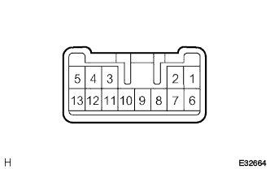

ヘッドランプ デイマ スイッチASSY 単体点検 |
| 1. ヘッドランプ デイマ スイッチASSY点検 |
ライトコントロールスイッチ導通点検
|  |
ＳＳＴ（トヨタエレクトリカルテスター）を使用して、コネクター各端子間の導通を点検する。
| 切り替え | 端子番号（端子名） | 導通 |
|---|---|---|
| OFF | 12（B1）←→6（T1）←→7（RF）←→10（ED） | いずれもなし |
| TAIL | 12（B1）←→6（T1） | あり |
| HEAD | 12（B1）←→6（T1） | あり |
| HEAD | 7（RF）←→10（ED） | あり |
ヘッドランプディマスイッチ導通点検（ディスチャージヘッドランプ装着車）
ＳＳＴ（トヨタエレクトリカルテスター）を使用して、コネクター各端子間の導通を点検する。
| 切り替え | 端子番号（端子名） | 導通 |
|---|---|---|
| FLASH | 11（HU）←→10（ED）←→9（HL） | あり |
| LOW BEAM | 9（HL）←→10（ED） | あり |
| HI BEAM | 11（HU）←→10（ED）←→9（HL） | あり |
ヘッドランプディマスイッチ導通点検（ハロゲンヘッドランプ装着車）
ＳＳＴ（トヨタエレクトリカルテスター）を使用して、コネクター各端子間の導通を点検する。
| 切り替え | 端子番号（端子名） | 導通 |
|---|---|---|
| FLASH | 11（HU）←→10（ED） | あり |
| LOW BEAM | 9（HL）←→10（ED） | あり |
| HI BEAM | 11（HU）←→10（ED） | あり |
ターンシグナルスイッチ導通点検
ＳＳＴ（トヨタエレクトリカルテスター）を使用して、コネクター各端子間の導通を点検する。
| 切り替え | 端子番号（端子名） | 導通 |
|---|---|---|
| 右 | 4（TB）←→5（TR） | あり |
| ニュートラル | 3（TL）←→4（TB）←→5（TR） | いずれもなし |
| 左 | 3（TL）←→4（TB） | あり |
フォグランプスイッチ導通点検(1NZ-FEのみ)
SST(トヨタエレクトリカルテスター)を使用して、コネクター各端子間の導通を点検する。
| 切り替え | 端子番号(端子名) | 導通 |
|---|---|---|
| OFF | 1(LFG)←→2(BFG) | なし |
| ON | 1(LFG)←→2(BFG) | あり |